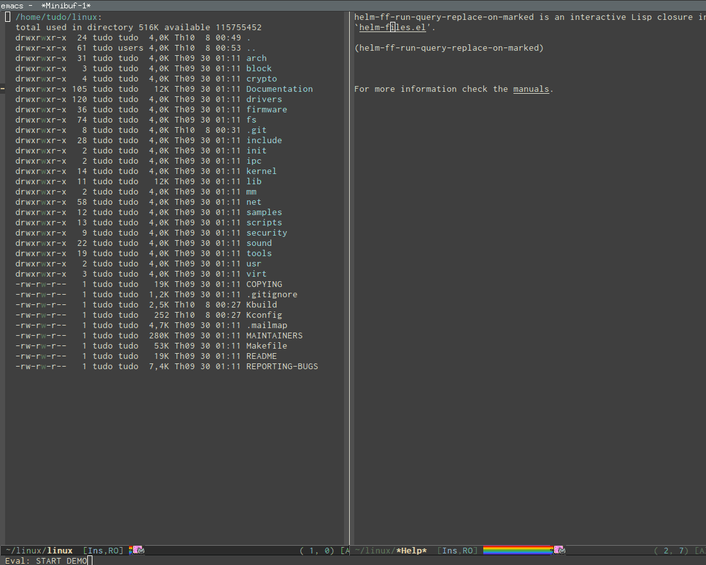

Would you like to give [cquery](https://github.com/jacobduf... and [lsp-ui](https://github.com/emacs-ls... a try?
Also on http://tuhdo.github.io/emacs-tutor.html
 - THE BASICS")
Emacs Mini Manual (PART 1) - THE BASICS
- 6 years ago
- 21 comments
Well, that's your choice. But I suggest that writing code without any support is
A Package in a league of its own: Helm
- 6 years ago
- 67 comments
After using Helm, you are going to have a big change in the way you use
Peek definition with Emacs frame
- 3 years ago
- 3 comments
Peek definition with Emacs frame In many IDEs, peek definition is a feature that

C/C++ Development Environment for
- 6 years ago
- 71 comments
EDE, short for Emacs Development Environment, is a generic interface for
Emacs Mini Manual (PART 2) - LISP
- 6 years ago
- 5 comments
Lisp syntax is inherently simple. At its core, this is all that required to
Emacs for Programming
- 6 years ago
- 1 comment
Taken from here: EmacsWiki Prefix Meaning C- (press and hold) the
Setup Emacs with PDF Tools and Xwidgets
- 4 years ago
- 1 comment
DEMO (Notice how I press some text in PDF file and Latex buffer jumps to

Exploring large projects with
- 6 years ago
- 26 comments
From the homepage: Projectile is a project interaction library for
- Recommend Recommended 7
- Find More Discussions
Discussion Recommended!
Recommending means this is a discussion worth sharing. It gets shared to your followers' Disqus feeds, and gives the creator kudos!
- TweetShare
- Sort by Best

MaskRay MaskRay 2 years ago see moreI use my ccls https://github.com/MaskRay/... (which has some improvement on indexing, serialization, pipeline, ...) now
Martin Sosic 3 years ago edited see moreThank you for the great post, it helped me a lot while setting up my Emacs for C++ development! I used a lot of advice from it, but ended up using Irony and RTags as C++ backend, so I wrote a shorter blog post of my own ( http://martinsosic.com/deve... ) talking about my setup and focusing on those two. I appreciate any feedback :)!
fractalspace 4 years ago see moreEncouraged with the claim at the beginning ".. the setup is short and easy (mostly
copy/paste Emacs Lisp code into your init.el)", I started going through the process, until all of sudden I hit: "...Know how to use package.el and MELPA. If you don't know how to
use, read the guide How to use Emacs package manager."How is it short and easy again?
Manoel Vilela fractalspace 3 years ago see moreIn the context of setup your emacs actually this is pretty easy. xD
Mediin 3 months ago see moreI'm still wondering if anyone actually has managed to setup their emacs with this, as this is my third try, and I can't progress. Has anyone an actual short, working tutorial for this? A clonable github repository that just works would be best. Nobody has time to read through all of this.
Michael Grtz a year ago see moreTHANK YOU!
After using a lot of IDE'S (eclipse, code::blocks, qtcreator, geany, etc), which all have their advantages, I want to use EMACS again. Reasons: complete usable with keyboards, fast and completly configurable. But I struggled with configuration. But this guide here turns my EMACS into a brilliant IDE for developing C++. And best of all, it is still fast.Eric Buist 2 years ago see moreYasnippet mode not working as well. The mode is turned on, I have a C++ file opened, typing for then tab does nothing. The link to see available available snippets shows nothing except another GitHub repository with some generic information and HTML snippets.
Eric Buist 2 years ago see moreI'm just getting lost on this page. It's hard to find information with all these images meaning nothing, and the indications don't work, e.g., C-M-f acts like M-f, and trying C-M, then f just acts as Return key and type 'f'. For which version of GNU Emacs is this tailored? I am using the 25.2.2 version shipped with Ubuntu 18.04 and would really like to avoid downgrading.
Eric Buist 2 years ago see moreHi,
Looks promising. However, the proposed init.el breaks C-x u. Instead of undoing, C-x u now creates an empty window at the bottom, moves the cursor to it and then there is no way to get out of it except C-x o, and no undo happens. Seems this behavior is introduced by undo-tree, which looks bugged in Ubuntu 18.04, at least no way to get out of the tree. I tried to remove it from init.el, no effect, it loads indirectly through something else.Kristian Nrgaard 3 years ago see moreNice guide, thanks. But I have a problem with updating the tag database.
The first time I run "helm-gtags-dwim" I am prompted to run gtags, I answer yes and select the project root directory.
For GTAGSLABEL I choose default.
The files GPATH, GRTAGS, GSYMS, GTAGS are created. And finding tags now works fine.
But then, when I try to update the database with "helm-gtags-update-tags" I get the message:
Failed: update tags(2)
Any help is appreciated.
Mediin 3 years ago see moreNow thats all fine and dandy, but i think the real question that concerns everyone here is: How did you get that nyan cat in your editor?
Eric Millington 4 years ago edited see moreOnly thing that slowed me down was running m-x load-file RET init.el as that file is in emacs.d so should read mx load-file RET /.emacs.d/init.el
Other than that, no problems :-)
Don't know how to use it yet though, typed 'for' in a C++ file and nothing happened as far as auto-complete is concerned, if I do that in Sublime text I get a full template for the loop.Dhiraj Reddy 4 years ago edited see more"However, remember that you can only jump to tag definitions of external dependencies, and nothing else (such as files or references)". Is there no way to circumvent this? I would really love to jump to all references in the included GTAGSLIBPATH
Shafayet Khan 4 years ago see moreThanks for this. Just have a quick question: In the gif "Interactive outline tree using moo-jump-local from function-args package", how are you interactively jumping to the identifiers in the source code buffer (while keeping the helm session)?
tuhdo Mod Shafayet Khan 4 years ago see moreYou can press TAB (if you followed my Helm guide) or if you use the default Helm key, you press C-z. Glad you found ithe guide helpful.
Shafayet Khan tuhdo 4 years ago see moreThanks tuhdo! Unfortunately, I can't seem to get it to work as yours. I have the following in my .emacs:
(define-key helm-map (kbd "<tab>") 'helm-execute-persistent-action)
Pressing tab once doesn't do much. Pressing it again takes me to the symbol but killing the helm session.
I also have this in my config:
(define-key helm-map (kbd "C-z") 'helm-select-action)
Pressing C-z in the helm session suspends the frame :(Sorry for the troubles. I can't seem to get it to work without quitting from the helm session. Thanks again!
tuhdo Mod Shafayet Khan 4 years ago see moreNot sure what was wrong with the latest function-args. You can use `helm-semantic-or-imenu`, which is as good (assumed that you already enabled Semantic). And you can press TAB to jump to anywhere without canceling your Helm session.
ackerleytng 4 years ago edited see moreThank you so much for writing this!!
I have a question:
After doing `M-,` or `pop-tag-mark`, is there a way to 'unpop', or like undo that navigation? Sometimes I just want to go back without doing `M-.` again and selecting the correct one.
Thanks again!
salotz 4 years ago see moreThe grep files in project command should be "C-c p s g", not "C-c p g s" which is search files in project at point.
salotz 5 years ago see moreI think the part where you mention `helm-gtags-find-rtags` should be `helm-gtags-find-rtag`. At least in my install there is no former and this fixes it.
CodyChan 6 years ago see moreOnce I `q` in `*gud-name*` buffer with the many-windows layout, how can I kill all the related windows/buffers at the same time?
tuhdo Mod CodyChan 6 years ago see moreThere's none. I run gdb-many-windows in another frame and switch back and forth between code frame and debugger frame with "C-x 5 o". Or you may want to switch using by names if you have many frames using command "select-frame-by-name", default to "C-x 5 s". After finishing your debugging session, simply close the debugger frame with "C-x 5 0".
tuhdo Mod stardiviner 6 years ago see moreHi,
I used Byzanz. Please refer to this Ubuntu answer for details: http://askubuntu.com/a/1235...
I recorded the gifs using two monitor:
- One for actual recording.
- One for executing the terminal command.
6 years ago see moreGreat Post.For a long time,my emacs c/cpp environment is a mess,now i wll configure my settings based on yours.